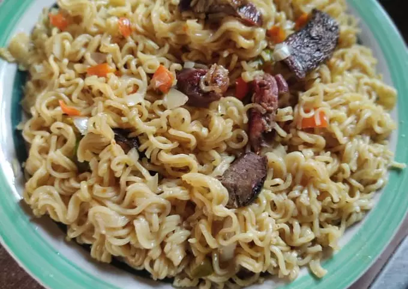

Quick on the go noodle recipe
Tasty noodles on the go. Indomie has always being a delight for both adults and kids and it take no much time than 5 minutes to prep -except if you have great desire for intricacy and igredients.
At best, it reqires little effort for such great taste.

Here is how to make indomie noodles in a quick yet inviting manner.
Ingredients
- Pack of indomie special chiken flavour.
- Eggs
- Tomatoes, onions, fresh pepper, and carrots.
- Sardines.
- 50ml vegetable oil.
Directions
- Cook noodle for 3 minutes without addding the spice. Sieve and allow to drain.
- Cut vegetable in to sizable bits.
- Set your frying pan on fire and stir fry your already copped vegetables. This should be done for about 3 minutes to so it still retains it's crispy crunch texture
- Add the indomie spice to the indomie in the bowl.
- Break the two eggs into the same bowl containing the noodle and stir together,then transfer to the frying pan.
- Finally add the sardines into the mixture and stir well.
- Serve in a bowl and your're done!
There you have it! Dig in and enjoy the tasty goodness. You just made one of my favorite Nigerian breakfasts
Lest I forget, it taste better with chilled sprite!